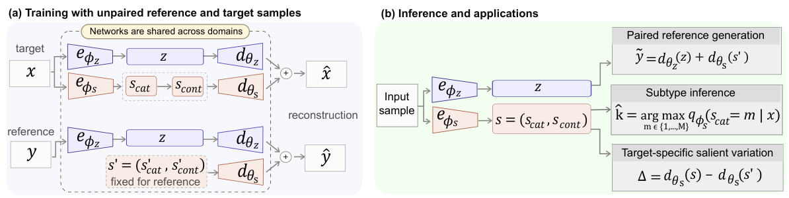
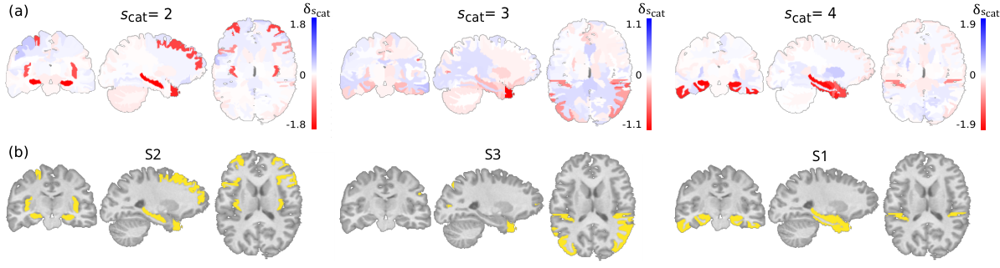
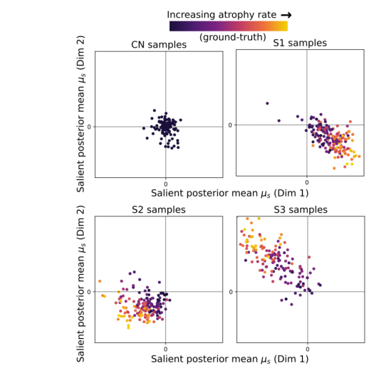
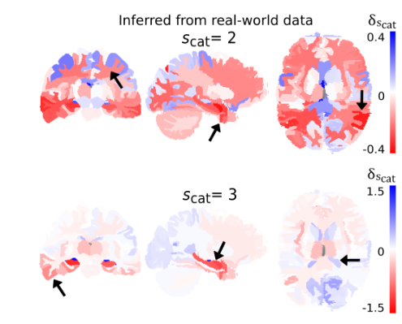

UNIVERSITY OF PENNSYLVANIA / MACHINE LEARNING RESEARCH
CASL-VAELearning Structured Latent Variables
from Unpaired Data
for Semi-supervised Clustering and Paired Sample Generation
Center for AI and Data Science for Integrated Diagnostics (AI2D)
University of Pennsylvania · † Equal advising
Discover what is shared.
Understand what makes the target different.
Learning from contrasts.
How does a heterogeneous target population differ from a reference population when matched samples are unavailable?
CASL-VAE separates common variation from target-specific variation using a hierarchical salient latent space: a discrete variable captures subtypes, and a conditional continuous variable captures differences within each subtype. This structure supports subtype discovery and paired sample generation from unpaired observations.
Training uses reference/target labels. No target subtype labels or matched pairs are required.
02 / METHOD
One model. Three latent factors.
Separate shared variation.
Structure the salient differences.

Encode the common
The common latent z captures variation shared across reference and target populations.
Structure the salient
A categorical latent captures subtype structure. A conditional continuous latent captures variation within each subtype.
Generate a counterpart
Keep z fixed and decode with the reference salient preset to estimate a paired reference sample.
EXPLORE THE MODEL OUTPUTS
Discover target structure without subtype labels.
Infer category probabilities from the salient encoder. One category is reserved for the reference population; the remaining categories represent target subtypes.
03 / RESULTS
From latent factors to interpretable patterns.
Semi-synthetic neuroimaging experiments provide known atrophy patterns and severity for evaluating the learned representation.

BEYOND A CLUSTER LABEL
Different subtypes.
Continuous differences.
The hierarchical salient space captures both category membership and variation within each category. Here, continuous posterior means are colored by the ground-truth simulated atrophy rate.
Reference samples remain near the preset origin, while target samples exhibit within-subtype structure.

Quantitative evaluation
Semi-synthetic neuroimaging · mean across 10 repeated splits
| CASL-VAE metric | Mild atrophy 10–20% | Typical atrophy 10–30% |
|---|---|---|
| Target-only clustering ARI ↑ | 0.468 (0.371, 0.564) | 0.620 (0.535, 0.706) |
| Target + reference clustering ARI ↑ | 0.587 (0.521, 0.653) | 0.697 (0.672, 0.722) |
| Paired reference generation Cosine similarity ↑ | 0.5835 (0.5777, 0.5894) | 0.5816 (0.5747, 0.5885) |
Parentheses show 95% confidence intervals. Values from Tables 1–2 of the paper; see the paper for baselines and statistical comparisons.

04 / REAL-WORLD APPLICATION
Characterizing heterogeneity in Alzheimer's disease.
In ADNI, stability-based category selection yields two target patterns with different regional distributions of volume loss. Individual deviation estimates are associated with clinical and biomarker measures.
These learned categories may reflect subtype, severity, or overlapping mechanisms. Biological interpretation requires independent validation.
Explore the experiments in the paper05 / GET STARTED
Bring your own
reference–target data.
Explore the implementation, prepare feature measurements, and train CASL-VAE on your populations.
06 / CITATION
Build on this work.
@misc{chintapalli2026casl,
title={CASL-VAE: Learning Structured Latent Variables from Unpaired Data
for Semi-supervised Clustering and Paired Sample Generation},
author={Chintapalli, Sai Spandana and Chaudhari, Pratik
and Davatzikos, Christos},
year={2026},
note={Manuscript}
}